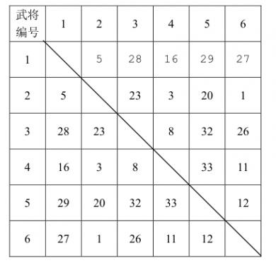
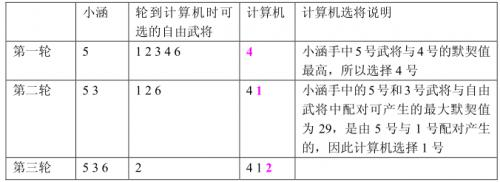

贪心
贪心算法的核心在于局部最优能推导到全局最优，很多题目寻求贪心解不难，但要证明贪心解为全局最优解是比较困难的。
P1208 [USACO1.3]混合牛奶 Mixing Milk
题目描述
由于乳制品产业利润很低，所以降低原材料（牛奶）价格就变得十分重要。帮助 Marry 乳业找到最优的牛奶采购方案。
Marry 乳业从一些奶农手中采购牛奶，并且每一位奶农为乳制品加工企业提供的价格是不同的。此外，就像每头奶牛每天只能挤出固定数量的奶，每位奶农每天能提供的牛奶数量是一定的。每天 Marry 乳业可以从奶农手中采购到小于或者等于奶农最大产量的整数数量的牛奶。
给出 Marry 乳业每天对牛奶的需求量，还有每位奶农提供的牛奶单价和产量。计算采购足够数量的牛奶所需的最小花费。
注：每天所有奶农的总产量大于 Marry 乳业的需求量。
输入格式
第一行二个整数 n, m，表示需要牛奶的总量，和提供牛奶的农民个数。
接下来 m 行，每行两个整数 pi, ai，表示第 i 个农民牛奶的单价，和农民 i 一天最多能卖出的牛奶量。
输出格式
单独的一行包含单独的一个整数，表示 Marry 的牛奶制造公司拿到所需的牛奶所要的最小费用。
样例 #1
样例输入 #1
1 | 100 5 |
样例输出 #1
1 | 630 |
提示
【数据范围】
对于 100% 的数据：
0 ≤ n, ai ≤ 2 × 106，0 ≤ m ≤ 5000，0 ≤ pi ≤ 1000
题目翻译来自 NOCOW。
USACO Training Section 1.3
解题思路
这还不简单，先买便宜的牛奶，再买贵的，先排序然后顺序取值即可，或者整理成堆再逐个取也行。时间复杂度 O(nlog n).
解答代码
1 |
|
P4995跳跳！
题目描述
你是一只小跳蛙，你特别擅长在各种地方跳来跳去。
这一天，你和朋友小 F 一起出去玩耍的时候，遇到了一堆高矮不同的石头，其中第 i 块的石头高度为 hi，地面的高度是 h0 = 0。你估计着，从第 i 块石头跳到第 j 块石头上耗费的体力值为 (hi − hj)2，从地面跳到第 i 块石头耗费的体力值是 (hi)2。
为了给小 F 展现你超级跳的本领，你决定跳到每个石头上各一次，并最终停在任意一块石头上，并且小跳蛙想耗费尽可能多的体力值。
当然，你只是一只小跳蛙，你只会跳，不知道怎么跳才能让本领更充分地展现。
不过你有救啦！小 F 给你递来了一个写着 AK 的电脑，你可以使用计算机程序帮你解决这个问题，万能的计算机会告诉你怎么跳。
那就请你——会写代码的小跳蛙——写下这个程序，为你 NOIp AK 踏出坚实的一步吧！
输入格式
输入一行一个正整数 n，表示石头个数。
输入第二行 n 个正整数，表示第 i 块石头的高度 hi。
输出格式
输出一行一个正整数，表示你可以耗费的体力值的最大值。
样例 #1
样例输入 #1
1 | 2 |
样例输出 #1
1 | 5 |
样例 #2
样例输入 #2
1 | 3 |
样例输出 #2
1 | 49 |
提示
样例解释
两个样例按照输入给定的顺序依次跳上去就可以得到最优方案之一。
数据范围
对于 1 ≤ i ≤ n，有 0 < hi ≤ 104，且保证 hi 互不相同。
对于 10% 的数据，n ≤ 3；
对于 20% 的数据，n ≤ 10；
对于 50% 的数据，n ≤ 20；
对于 80% 的数据，n ≤ 50；
对于 100% 的数据，n ≤ 300。
解题思路
显而易见，双指针即可，先跳最高的，再到最低的，以此类推。
解答代码
1 |
|
P1094 [NOIP2007 普及组] 纪念品分组
题目描述
元旦快到了，校学生会让乐乐负责新年晚会的纪念品发放工作。为使得参加晚会的同学所获得 的纪念品价值相对均衡，他要把购来的纪念品根据价格进行分组，但每组最多只能包括两件纪念品， 并且每组纪念品的价格之和不能超过一个给定的整数。为了保证在尽量短的时间内发完所有纪念品，乐乐希望分组的数目最少。
你的任务是写一个程序，找出所有分组方案中分组数最少的一种，输出最少的分组数目。
输入格式
共 n + 2 行：
第一行包括一个整数 w，为每组纪念品价格之和的上限。
第二行为一个整数 n，表示购来的纪念品的总件数 G。
第 3 ∼ n + 2 行每行包含一个正整数 Pi 表示所对应纪念品的价格。
输出格式
一个整数，即最少的分组数目。
样例 #1
样例输入 #1
1 | 100 |
样例输出 #1
1 | 6 |
提示
50% 的数据满足：1 ≤ n ≤ 15。
100% 的数据满足：1 ≤ n ≤ 3 × 104，80 ≤ w ≤ 200，5 ≤ Pi ≤ w。
解题思路
应该注意到每组最多只能包含两件，可以先对礼物进行排序，然后依次将最大最小的进行组合，若不能组合则将最大的单独打包。
解答代码
1 |
|
P1199 [NOIP2010 普及组] 三国游戏
题目描述
小涵很喜欢电脑游戏，这些天他正在玩一个叫做《三国》的游戏。
在游戏中，小涵和计算机各执一方，组建各自的军队进行对战。游戏中共有 N 位武将（N为偶数且不小于4），任意两个武将之间有一个“默契值”，表示若此两位武将作为一对组合作战时，该组合的威力有多大。游戏开始前，所有武将都是自由的（称为自由武将，一旦某个自由武将被选中作为某方军队的一员，那么他就不再是自由武将了），换句话说，所谓的自由武将不属于任何一方。
游戏开始，小涵和计算机要从自由武将中挑选武将组成自己的军队，规则如下：小涵先从自由武将中选出一个加入自己的军队，然后计算机也从自由武将中选出一个加入计算机方的军队。接下来一直按照“小涵→计算机→小涵→……”的顺序选择武将，直到所有的武将被双方均分完。然后，程序自动从双方军队中各挑出一对默契值最高的武将组合代表自己的军队进行二对二比武，拥有更高默契值的一对武将组合获胜，表示两军交战，拥有获胜武将组合的一方获胜。
已知计算机一方选择武将的原则是尽量破坏对手下一步将形成的最强组合，它采取的具体策略如下：任何时刻，轮到计算机挑选时，它会尝试将对手军队中的每个武将与当前每个自由武将进行一一配对，找出所有配对中默契值最高的那对武将组合，并将该组合中的自由武将选入自己的军队。 下面举例说明计算机的选将策略，例如，游戏中一共有6个武将，他们相互之间的默契值如下表所示：

双方选将过程如下所示：

小涵想知道，如果计算机在一局游戏中始终坚持上面这个策略，那么自己有没有可能必胜？如果有，在所有可能的胜利结局中，自己那对用于比武的武将组合的默契值最大是多少？
假设整个游戏过程中，对战双方任何时候均能看到自由武将队中的武将和对方军队的武将。为了简化问题，保证对于不同的武将组合，其默契值均不相同。
输入格式
共 N 行。
第一行为一个偶数 N，表示武将的个数。
第 2 行到第 N 行里，第 i + 1 行有 Ni 个非负整数，每两个数之间用一个空格隔开，表示 i 号武将和 i + 1, i + 2, …, N 号武将之间的默契值（ 0≤ 默契值 ≤ 1, 000, 000, 000）。
输出格式
共 1 或 2 行。
若对于给定的游戏输入，存在可以让小涵获胜的选将顺序，则输出 1，并另起一行输出所有获胜的情况中，小涵最终选出的武将组合的最大默契值。如果不存在可以让小涵获胜的选将顺序，则输出 0。
样例 #1
样例输入 #1
1 | 6 |
样例输出 #1
1 | 1 |
样例 #2
样例输入 #2
1 | 8 |
样例输出 #2
1 | 1 |
| 1 | 2 | 3 | 4 | 5 | 6 | 7 | 8 | |
|---|---|---|---|---|---|---|---|---|
| 1 | 42 | 24 | 10 | 29 | 27 | 12 | 58 | |
| 2 | 42 | 31 | 8 | 16 | 26 | 80 | 6 | |
| 3 | 24 | 31 | 25 | 3 | 36 | 11 | 5 | |
| 4 | 10 | 8 | 25 | 33 | 20 | 17 | 13 | |
| 5 | 29 | 16 | 3 | 33 | 15 | 77 | 9 | |
| 6 | 27 | 26 | 36 | 20 | 15 | 4 | 50 | |
| 7 | 12 | 80 | 11 | 17 | 77 | 4 | 19 | |
| 8 | 58 | 6 | 5 | 13 | 9 | 50 | 19 |
提示
【数据范围】
对于$ 40%$的数据有 N ≤ 10。
对于70%的数据有$ N≤18$。
对于 100%的数据有 N ≤ 500。
解题思路
显然，这是一个博弈论游戏，我们先观察一下样例，小涵都赢了，而且输出都是第二大的值，有没有可能是小涵必赢且能拿的必定是第二大的值呢？这个猜想是对的，但很可能观察不出这个结论，没关系，后面可以继续分析。
做这个问题的时候，我首先考虑了什么时候小涵必输，发现这个是个很难的问题，那么反过来，有没有可能利用计算机的贪心策略来想办法选到最大默契的武将呢，比如样例1中我们有没有可能选到默契为 33 即武将 4 和 5 呢？显然答案是否定的，选不到，因为小涵和电脑是交替选择的，无论你小涵先选 4 还是先选 5 而4 和 5 互为对方最大默契的武将所以根据电脑的策略都会将另外一个选掉破坏小涵的选择，所以小涵无法选到默契最大的武将。
既然无法选到最大默契的武将，我们可以注意到样例1的输出是 32 即第二大的武将，那么小涵能否退而求其次保证自己选到次大的武将并不让计算机选到最大的武将呢？对于样例1是可以做到的，因为第二大默契的是 5 和 3，只要小涵先选 5，计算机必定要选 4 否则小涵就能选 4 拿到最大默契的武将了，此时小涵只要再选 3 就能轻松拿到第二大的武将且计算机没有拿到最大默契的武将组，从而保证了小涵必胜。
但是上面的这种属于比较特殊的情况，最大和次大的组合分别为 (5, 4) 和 (5, 3) 所以可以逼迫电脑陷入两难的境地，若是最大和次大的组合没有重叠呢？我们试着简单构造一个样例：
| 1 | 2 | 3 | 4 | |
|---|---|---|---|---|
| 1 | \ | 88 | 1 | 2 |
| 2 | 88 | \ | 3 | 4 |
| 3 | 1 | 3 | \ | 77 |
| 4 | 2 | 4 | 77 | \ |
这个样例非常简单，最大的是 (1, 2) 次大的是 (3, 4)，我们简单分析就能发现此时小涵并不能拿到次大的，这个示例其实规律很明显了，小涵能取得的最大的武将组合其实是所有行中的次大值的最大值，即 4，然后我们可以破坏电脑选择的最大默契的武将。
总结就是，我们先选在计算机策略下能选的最大的武将，然后按照计算机的策略破坏计算机能选的最大的，多出的第一步策略和先手优势，保证了小涵是必胜的。
解答代码
1 |
|
P2672 [NOIP2015 普及组] 推销员
题目背景
NOIP2015 普及组 T4
题目描述
阿明是一名推销员，他奉命到螺丝街推销他们公司的产品。螺丝街是一条死胡同，出口与入口是同一个，街道的一侧是围墙，另一侧是住户。螺丝街一共有N家住户，第i家住户到入口的距离为Si米。由于同一栋房子里可以有多家住户，所以可能有多家住户与入口的距离相等。阿明会从入口进入，依次向螺丝街的X家住户推销产品，然后再原路走出去。
阿明每走1米就会积累1点疲劳值，向第i家住户推销产品会积累Ai点疲劳值。阿明是工作狂，他想知道，对于不同的X，在不走多余的路的前提下，他最多可以积累多少点疲劳值。
输入格式
第一行有一个正整数N，表示螺丝街住户的数量。
接下来的一行有N个正整数，其中第i个整数Si表示第i家住户到入口的距离。数据保证S1 ≤ S2 ≤ … ≤ Sn < 108。
接下来的一行有N个正整数，其中第i个整数Ai表示向第i户住户推销产品会积累的疲劳值。数据保证Ai < 1000。
输出格式
输出N行，每行一个正整数，第 i 行整数表示当X = i时，阿明最多积累的疲劳值。
样例 #1
样例输入 #1
1 | 5 |
样例输出 #1
1 | 15 |
样例 #2
样例输入 #2
1 | 5 |
样例输出 #2
1 | 12 |
提示
【输入输出样例1说明】
X = 1:向住户5推销，往返走路的疲劳值为5 + 5，推销的疲劳值为5，总疲劳值为15。
X = 2:向住户4, 5推销，往返走路的疲劳值为5 + 5，推销的疲劳值为4 + 5，总疲劳值为5 + 5 + 4 + 5 = 19。
X = 3:向住户3, 4, 5推销，往返走路的疲劳值为5 + 5，推销的疲劳值3 + 4 + 5，总疲劳值为5 + 5 + 3 + 4 + 5 = 22。
X = 4:向住户2, 3, 4, 5推销，往返走路的疲劳值为5 + 5，推销的疲劳值2 + 3 + 4 + 5，总疲劳值5 + 5 + 2 + 3 + 4 + 5 = 24。
X = 5:向住户1, 2, 3, 4, 5推销，往返走路的疲劳值为5 + 5，推销的疲劳值1 + 2 + 3 + 4 + 5，总疲劳值5 + 5 + 1 + 2 + 3 + 4 + 5 = 25。
【输入输出样例2说明】
X = 1：向住户4推销，往返走路的疲劳值为4 + 4，推销的疲劳值为4，总疲劳值4 + 4 + 4 = 12。
X = 2：向住户1, 4推销，往返走路的疲劳值为4 + 4，推销的疲劳值为5 + 4，总疲劳值4 + 4 + 5 + 4 = 17。
X = 3：向住户1, 2, 4推销，往返走路的疲劳值为4 + 4，推销的疲劳值为5 + 4 + 4，总疲劳值4 + 4 + 5 + 4 + 4 = 21。
X = 4：向住户1, 2, 3, 4推销，往返走路的疲劳值为4 + 4，推销的疲劳值为5 + 4 + 3 + 4，总疲劳值4 + 4 + 5 + 4 + 3 + 4 = 24。或者向住户1, 2, 4, 5推销，往返走路的疲劳值为5 + 5，推销的疲劳值为5 + 4 + 4 + 1，总疲劳值5 + 5 + 5 + 4 + 4 + 1 = 24。
X = 5：向住户1, 2, 3, 4, 5推销，往返走路的疲劳值为5 + 5，推销的疲劳值为5 + 4 + 3 + 4 + 1，总疲劳值5 + 5 + 5 + 4 + 3 + 4 + 1 = 27。
【数据说明】
对于20%的数据，1 ≤ N ≤ 20；
对于40%的数据，1 ≤ N ≤ 100；
对于60%的数据，1 ≤ N ≤ 1000；
对于100%的数据，1 ≤ N ≤ 100000。
解题思路
不难发现，疲劳值分为两个部分，一个是走路的疲劳值，一个是推销的疲劳值，其中走路的疲劳值只与到达的最远的住户的距离有关，而推销的疲劳值与到访的住户有关。
我们先考虑最简单的两种极端情况：
- X = 1
时只推销一个住户，那么
疲劳值=住户距离*2 + 推销疲劳值，我们只需按照这个指标找最大即可 - X = N 时推销所有住户，那么走路疲劳值就是固定的了，推销疲劳值等于所有住户疲劳值之和
由于问题是求解所有 X 的情况下的解，那么一个很关键的问题是不同的 X 下的解是否有递推关系，即我们能否从 X = k 推导出 X = k + 1 ，或者换一种说法前者是否是后者的一个子问题，答案是肯定的，但我不会证明，想证明可以去看洛谷的题解区
那么问题就很简单了，假设推销的最远距离为 k 那么有两个选择，一个是选择小于 k 的住户进行推销，这部分并不会增加距离的疲劳值，另一个是选择大于 k 的住户进行推销，这部分会带来额外的距离疲劳开销。
其实仔细想想问题没那么复杂，每次推销只需要做出选择：是去更远的地方推销，还是去更增加疲劳值的地方推销
解答代码
1 |
|
P1080 [NOIP2012 提高组] 国王游戏
题目描述
恰逢 H 国国庆，国王邀请 n 位大臣来玩一个有奖游戏。首先，他让每个大臣在左、右手上面分别写下一个整数，国王自己也在左、右手上各写一个整数。然后，让这 n 位大臣排成一排，国王站在队伍的最前面。排好队后，所有的大臣都会获得国王奖赏的若干金币，每位大臣获得的金币数分别是：排在该大臣前面的所有人的左手上的数的乘积除以他自己右手上的数，然后向下取整得到的结果。
国王不希望某一个大臣获得特别多的奖赏，所以他想请你帮他重新安排一下队伍的顺序，使得获得奖赏最多的大臣，所获奖赏尽可能的少。注意，国王的位置始终在队伍的最前面。
输入格式
第一行包含一个整数 n，表示大臣的人数。
第二行包含两个整数 a 和 b，之间用一个空格隔开，分别表示国王左手和右手上的整数。
接下来 n 行，每行包含两个整数 a 和 b，之间用一个空格隔开，分别表示每个大臣左手和右手上的整数。
输出格式
一个整数，表示重新排列后的队伍中获奖赏最多的大臣所获得的金币数。
样例 #1
样例输入 #1
1 | 3 |
样例输出 #1
1 | 2 |
提示
【输入输出样例说明】
按 1、2、3 这样排列队伍，获得奖赏最多的大臣所获得金币数为 2；
按 1、3、2 这样排列队伍，获得奖赏最多的大臣所获得金币数为 2；
按 2、1、3 这样排列队伍，获得奖赏最多的大臣所获得金币数为 2；
按$ 2$、3、$1 $这样排列队伍，获得奖赏最多的大臣所获得金币数为 9；
按 3、1、$2 $这样排列队伍，获得奖赏最多的大臣所获得金币数为 2；
按$ 3$、2、1 这样排列队伍，获得奖赏最多的大臣所获得金币数为 9。
因此，奖赏最多的大臣最少获得 2 个金币，答案输出 2。
【数据范围】
对于 20% 的数据，有 1 ≤ n ≤ 10, 0 < a, b < 8；
对于 40% 的数据，有$ 1≤ n≤20,0 < a,b < 8$；
对于 60% 的数据，有 1 ≤ n ≤ 100；
对于 60% 的数据，保证答案不超过 109；
对于 100% 的数据，有 1 ≤ n ≤ 1, 000, 0 < a, b < 10000。
NOIP 2012 提高组 第一天 第二题
解题思路
结果为 $ $，欲要使结果变小，那么有两个办法，增大分母或减小分子
因为分子是累乘的，所以先考虑将大的分母放最后，小的分母放前面，即根据右手数字排序
其实这个思路不太对，因为要同时考虑到分子和分母，可以从另一个角度考虑，相邻两个人互换对后面没有影响，因为累乘顺序不影响结果，那么我们考虑相邻的第 i, j 位置的两个人谁在前面，假设前 i − 1 个人左手乘积为 x ，那么考虑两种情况：
- i, j 的顺序排列，和分布为为 x/ri, xli/rj
- j, i 的顺序排列，和为 x/rj, xlj/ri
要保证最大值最小，显然最大值肯定是 xli/rj 和 xlj/ri，若 $\dfrac{xl_i}{r_j} < \dfrac{xl_j}{r_i}$ 即 liri < ljrj 则 i 在前面，以此类推，类似冒泡排序的方法，可以推出最好的结果为按照左右手的两个数的乘积进行排序
由于部分数据过大，数据规模可能会达到1000001000 ，所以需要用到高精度乘除法，这里偷懒用 Python 吧
解答代码
1 | n = int(input()) |
P2123 皇后游戏
题目背景
还记得 NOIP 2012 提高组 Day1 的国王游戏吗？时光飞逝，光阴荏苒，两年过去了。国王游戏早已过时，如今已被皇后游戏取代，请你来解决类似于国王游戏的另一个问题。
题目描述
皇后有 n 位大臣，每位大臣的左右手上面分别写上了一个正整数。恰逢国庆节来临，皇后决定为 n 位大臣颁发奖金，其中第 i 位大臣所获得的奖金数目为第 i－1 位大臣所获得奖金数目与前 i 位大臣左手上的数的和的较大值再加上第 i 位大臣右手上的数。
形式化地讲：我们设第 i 位大臣左手上的正整数为 ai，右手上的正整数为 bi，则第 i 位大臣获得的奖金数目为 ci 可以表达为：
$$ c_{i} = \begin{cases} a_{1}+b_{1} & ,i=1 \\ \displaystyle \max \left \{ c_{i-1},\sum_{j=1}^{i}a_{j} \right \} +b_{i} & ,2\leq i \leq n \end{cases} $$
当然，吝啬的皇后并不希望太多的奖金被发给大臣，所以她想请你来重新安排一下队伍的顺序，使得获得奖金最多的大臣，所获奖金数目尽可能的少。
注意：重新安排队伍并不意味着一定要打乱顺序，我们允许不改变任何一位大臣的位置。
输入格式
第一行包含一个正整数 T，表示测试数据的组数。
接下来 T 个部分，每个部分的第一行包含一个正整数 n，表示大臣的数目。
每个部分接下来 n 行中，每行两个正整数，分别为 ai 和 bi，含义如上文所述。
输出格式
共 T 行，每行包含一个整数，表示获得奖金最多的大臣所获得的奖金数目。
样例 #1
样例输入 #1
1 | 1 |
样例输出 #1
1 | 8 |
样例 #2
样例输入 #2
1 | 2 |
样例输出 #2
1 | 528 |
提示
按照 1、2、3 这样排列队伍，获得最多奖金的大臣获得奖金的数目为 10；
按照 1、3、2 这样排列队伍，获得最多奖金的大臣获得奖金的数目为 9；
按照 2、1、3 这样排列队伍，获得最多奖金的大臣获得奖金的数目为 9；
按照 2、3、1 这样排列队伍，获得最多奖金的大臣获得奖金的数目为 8；
按照 3、1、2 这样排列队伍，获得最多奖金的大臣获得奖金的数目为 9；
按照 3、2、1 这样排列队伍，获得最多奖金的大臣获得奖金的数目为 8。
当按照 3、2、1 这样排列队伍时，三位大臣左右手的数分别为：
(1, 2)、(2, 2)、(4, 1)
第 1 位大臣获得的奖金为 1 + 2 = 3；
第 2 位大臣获得的奖金为 max{3, 3} + 2 = 5；
第 3 位大臣获得的奖金为 max{5, 7} + 1 = 8。
对于全部测试数据满足：T ≤ 10,1 ≤ n ≤ 20 000,1 ≤ ai, bi ≤ 109。
解题思路
和上一题同理，我们考虑相邻的两个人的先后顺序，假设其左右手的数字分别为 li, ri, lj, rj，其中 j = i + 1，前 i − 1 个人左手上的数和为 si，第 i − 1 位获得的奖金为 x，那么：
- 若 i 在 j 前，则 i 获得的奖金为 ci = max(x, si + li) + ri, j 获得的奖金为 cj = max(ci, si + li + lj) + rj
- 若 j 在 i 前，则 j 获得的奖金为 dj = max(x, si + lj) + rj, i 获得的奖金为 di = max(dj, si + li + lj) + ri
若 i 在前更优，则有：max (ci, cj) ≤ max (di, dj)，这个不等式似乎不好解，我们先试着能不能解析一下先把 max 去掉，其实不难看出，由于等式内的 max ，奖金肯定是越往后的人越多，所以可以化简为 cj < di，将其展开有： max(max(x, si + li) + ri, si + li + lj) + rj ≤ max(max(x, si + lj) + rj, si + li + lj) + ri 继续尝试消掉 max ，即将内层 max 展开并将外面的数字移到 max 里面： max(x + ri + rj, si + li + ri + rj, si + li + lj + rj) ≤ max(x + rj + ri, si + lj + rj + ri, si + li + lj + ri) 第一项是一样的，不影响结果可以消去 max(si + li + ri + rj, si + li + lj + rj) ≤ max(si + lj + rj + ri, si + li + lj + ri) 所有项中都有 si，同样消去对结果不影响 max(li + ri + rj, li + lj + rj) ≤ max(lj + rj + ri, li + lj + ri) 把相同的项可以提到外面 max(ri, lj) + li + rj ≤ max(rj, li) + lj + ri 移项处理下 max(ri, lj) − lj − ri ≤ max(rj, li) − li − rj 此时左右两边都是 max (a, b) − a − b 的形式，若 a > b 有 a − a − b 即 −b，反之为 −a，即两个数字中小的那个的相反数，所以上式化简为 min (rj, li) ≤ min (ri, lj) 下面这部分有点复杂，我也是看了评论区题解学会的，具体证明可以去看看，这里就写下结论：
- 需要双关键字排序，第一关键字是 min (rj, li), min (ri, lj) 降序, 当这两个关键字相等时按第二关键字 li, lj 升序（也可以按 ri, rj 降序）
解答代码
1 |
|
P5521 [yLOI2019] 梅深不见冬
题目背景
风，吹起梅岭的深冬；霜，如惊涛一样汹涌；
雪，飘落后把所有烧成空，像这场，捕捉不到的梦。 醒来时已是多年之久，宫门铜环才长了铁锈，也开始生出离愁。
——银临《梅深不见冬》
题目描述
扶苏从深冬的梅岭走出，来到了一棵有 n 个节点的有根树上。
如果你不知道什么是树，可以认为树是一个边数恰好比节点个数少一的简单无向连通图。
如果我们规定 x 是树 T 的根，那么定义任意一个节点 y 到根的路径就是从 y 出发不重复经过节点到达 x 所经过的所经过的点构成的点集。可以证明这样的点集有且仅有一个。
定义一个节点 u 是节点 v 的孩子，当且仅当 u 与 v 相连且 u 不在 v 到根的路径中。如果 u 是 v 的孩子，那么定义 v 是 u 的家长节点。
如果我是 @_rqy
那种毒瘤神仙的话，可能会问你每个节点的孩子数不超过 k 的 n
个节点的带标号无根树一共有多少个，可惜这个问题我也不会，所以我不会问你这么毒瘤的问题。
扶苏从这棵 n 个节点的树的 1 号节点出发，沿着树上的边行走。当然我们规定 1 号节点是这棵树的根。他所行走的规定是：当扶苏在节点 u 时，扶苏要么在 u 的孩子中选择一个没有到达过的节点 v 并行走到 v，要么选择回到 u 的家长节点。
现在给每个节点一个权值 w，其中 i 号节点的权值为 wi。他想给这棵树的某个节点放上从梅岭带出的梅花。我们规定扶苏能在节点 u 放上梅花当且仅当满足如下条件：
扶苏当前在节点 u。
对于 u 的所有孩子 v，节点 v 被放上了 wv 朵梅花。
同时，扶苏可以在任意时刻收回任意节点上的梅花，在收回梅花时不需要走到对应节点。
现在扶苏想问问你，对于每个节点，如果他想在 i 号节点上放 wi 朵梅花，那么他最少要从梅岭带出多少朵梅花。
输入格式
每个输入文件中都有且仅有一组测试数据。
数据的第一行是一个整数 n 代表树的节点个数。
第二行有 n − 1 个用空格隔开的整数，第 i 个整数 pi 代表第 i + 1 号节点的家长节点编号。
第三行有 n 个用空格隔开的整数，第 i 个整数代表 wi。
输出格式
输出一行 n 个用空格隔开的整数，第 i 个整数代表想在 i 号节点上放 wi 朵梅花需要准备的梅花个数。
样例 #1
样例输入 #1
1 | 3 |
样例输出 #1
1 | 2 2 1 |
样例 #2
样例输入 #2
1 | 3 |
样例输出 #2
1 | 3 1 1 |
样例 #3
样例输入 #3
1 | 6 |
样例输出 #3
1 | 21 20 13 20 12 15 |
提示
输入输出样例 1 解释
样例 1 的输入如上图，每个节点都需要放 1 一朵梅花。
如果在 1 号节点放梅花，则从一号点运动到 2 号点，然后运动到 3 号点，在 3 号点上放一朵梅花，返回 2 号点，在 2 号点上放一朵梅花，同时收回三号点的梅花，然后返回 1 号点，将从 3 号点收回的梅花放到 1 号点即可。一共需要两朵梅花。
在 2、3 号节点放梅花的方案类似。
输入输出样例 3 解释
样例 3 的输入如左图。
先从 1 号节点运动至 3 号节点，再运动至 5 号节点，在 5 号节点上放置 12 朵梅花，然后返回 3 号节点，在 3 号节点上放置 1 朵梅花，收回五号节点的 12 朵梅花，返回 1 号节点。
然后运动到 2 号节点，通过 4 号节点运动到 6 号节点，放下 15 朵梅花，返回 4 号节点放下 5 朵梅花，此时树上有的梅花数为 5 + 15 + 1 = 21，分别在 4 号、6 号和 3 号节点上。然后收回 6 号节点的梅花，返回 2 号节点，放下 14 朵梅花，收回 4 号节点的，返回 1 号节点，在 1 号节点上放置 3 朵梅花，即可达到在 1 号节点上放梅花的目的。
可以验证最大花费为 21。其他节点的答案同理。
请注意，其他节点的答案不一定是按照该节点的运动路径行走得到的。
数据规模与约定
| 测试点编号 | $n = $ | 测试点编号 | $n = $ |
|---|---|---|---|
| 1 | 1 | 11 | 100003 |
| 2 | 8 | 12 | 100003 |
| 3 | 8 | 13 | 100003 |
| 4 | 8 | 14 | 100003 |
| 5 | 8 | 15 | 100004 |
| 6 | 100000 | 16 | 100004 |
| 7 | 100000 | 17 | 100004 |
| 8 | 100002 | 18 | 100004 |
| 9 | 100002 | 19 | 100004 |
| 10 | 100002 | 20 | 100004 |
- 对于测试点 5、6，满足特殊性质：每个节点的孩子结点个数不超过 2。
- 对于测试点 8 到测试点 10，满足特殊性质：每个节点的孩子节点个数不超过 5。
- 对于测试点 11 到测试点 14，满足特殊性质：任意一个节点到根的路径上的点数不超过 3，也即树高不超过 3。
- 对于 100% 的数据，保证 1 ≤ n ≤ 105 + 4, 1 ≤ pi ≤ i, 1 ≤ wi ≤ 1000。
提示
- n 的末位数字可以帮助你快速的判断测试点所具有的的特殊性质。
解题思路
显然需要遍历整棵树，自底向上放梅花，运动路径倒是无关紧要，要在某个结点放梅花的条件是其孩子结点都放了梅花，所以对于某个结点要放梅花的最少梅花数量为：在每个孩子结点放梅花所需梅花的最小数量的最大值，与每个孩子及自身所需梅花的和，两者取最小值。
但上述思路对于示例二的根节点并不对，因为我们忽略了一个问题，即梅花是顺序堆放的，例如对于示例二的结点1，我们在结点2放好梅花以后必须在不撤掉2结点的梅花情况下把节点3的梅花放上，所以此时所需的梅花会更多，所以在子节点放梅花的顺序也很重要，不难想到按照子结点所需梅花的递增顺序进行放梅花是最合理的，我们重新总结思路如下：
每个结点的子节点全部放满梅花的最小数量是根据所需梅花数量从小到大在子结点放梅花，梅花数量=$\max{\sum_{0}^{i - 1}w_j + a_i}$ 其中 ai 表示在第
i
个结点放满梅花所需最小梅花数
提交后发现上面这个策略还是不对，问题出在：对于某个子结点，子节点只需要 855 梅花，而在子结点放梅花需要 3296 梅花，这个数量远远大于其他子节点所需梅花甚至自身所需梅花，所以我们在子节点放梅花的顺序怎么样呢？有以下推测：
按照子结点需要的梅花数量由小到大放（已被反例推翻）按照子结点需要的梅花数量由大到小放（考虑高度为 2 的树就能发现显然是不对的）按照在子节点放梅花所需的梅花数量由小到大（前面的反例拿过来也能推翻）按照在子节点放梅花所需的梅花数量由大到小（同样会被高度为 2 的树推翻）
那么问题就比较困难了，仔细思考，有两种结点优先级比较高：需要梅花少的，结余梅花（即放好以后收回子节点梅花）比较多的；两者相较后者优先级又比较高一些，所以我们试着按结余梅花数量进行排序，相同的需要梅花少的在前，成功通过！题解区有用数学归纳法的证明，我就不证明了。
显然，我们需要建树，由于需要对子结点进行排序，所以使用邻接表来存树是比较合适的，而后续计算使用递归会很简单。
解答代码
1 |
|